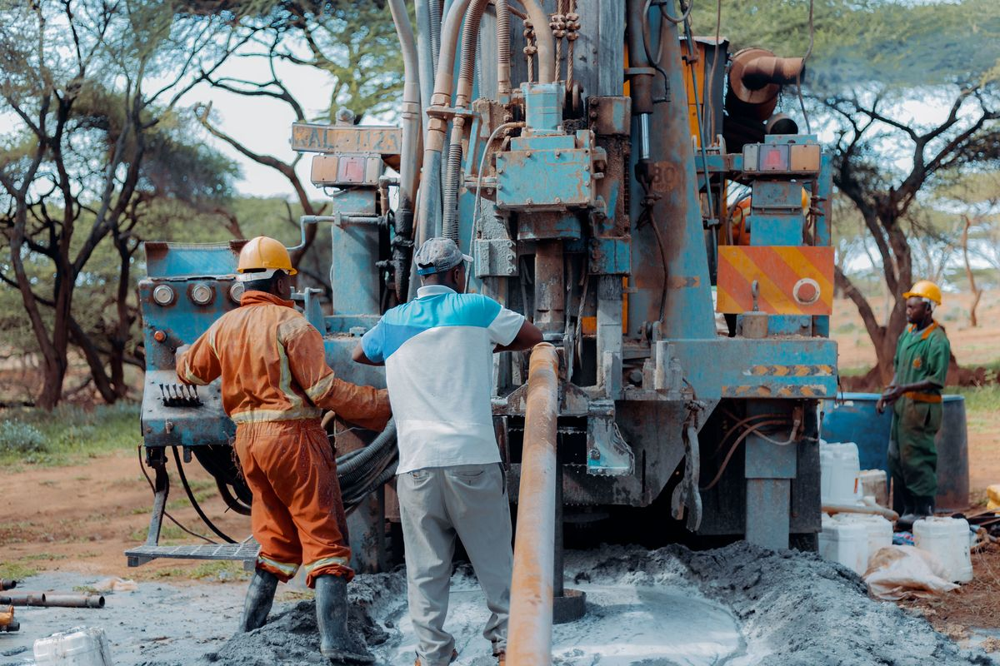
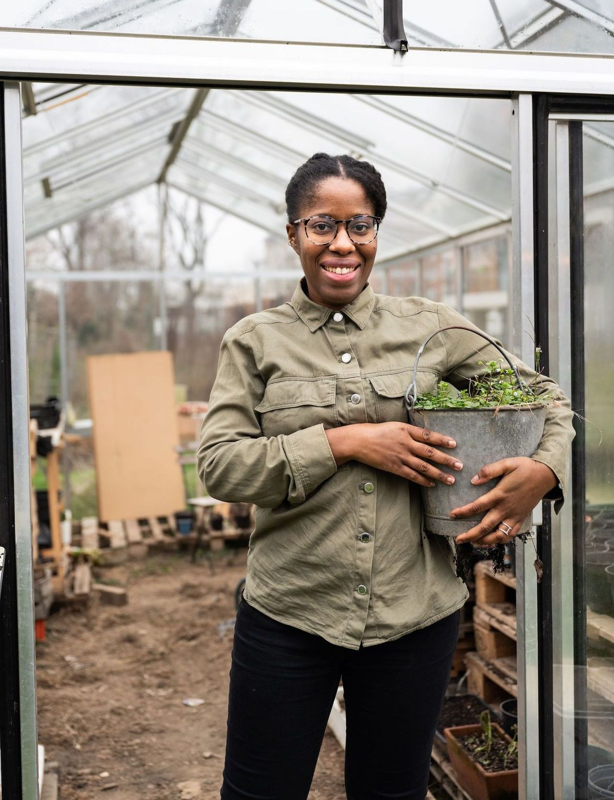
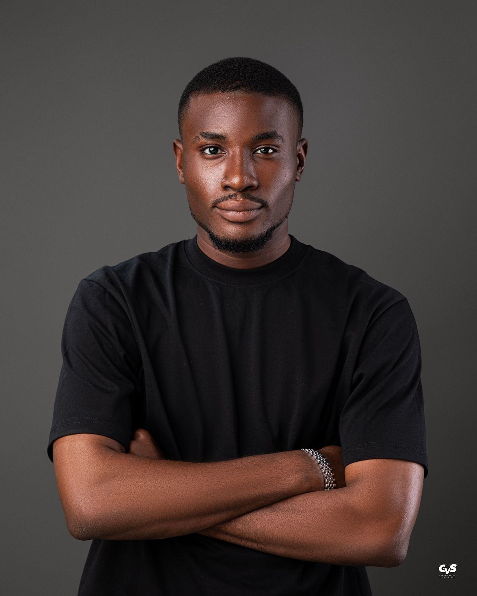

Rooted in Ghana. Reaching for Global Impact.
We're a community-first organization working to close the gap between people and the clean water they deserve.

How AquaFlow Began
AquaFlow Foundation was founded in Takoradi in 2020, after a small group of engineers and community organizers witnessed firsthand how a single working borehole could change daily life for an entire village. What started as a single hand-dug well project in the Western Region has since grown into a multi-region effort spanning Northern, Volta, and Central Ghana, always guided by the same principle: solutions should be built with communities, not handed to them.
Vision & Mission
Our Vision
A Ghana where every community, regardless of how remote, has reliable access to clean water and dignified sanitation.
Our Mission
To provide sustainable water and sanitation infrastructure across Ghana, while equipping residents with the knowledge and ownership to maintain it for generations to come.
Core Values
Integrity
We do what we say, especially when no one is watching.
Community Ownership
Every project belongs to the people it serves.
Sustainability
We build solutions meant to outlast our involvement.
Innovation
We adapt proven methods to fit local realities.
Compassion
Behind every statistic is a family we've come to know.
Objectives
Concrete goals guiding AquaFlow's work over the coming years.
| Objective | Target Outcome | Timeline |
|---|---|---|
| Expand borehole access | 10 new boreholes across Northern & Central regions | 2026 – 2028 |
| School sanitation coverage | Toilet facilities in 20 additional schools | 2026 – 2027 |
| Hygiene education reach | Train 5,000 additional households | Ongoing |
| Youth Ambassadors expansion | Launch chapters in Ashanti Region | 2027 |
| Global partnerships | Secure 3 international funding partners | 2026 – 2029 |
Leadership
Ms. Rejoice Wornyo
Executive Director10+ years leading WASH sector development across West Africa.
Mr. Desmond Dzakpasu
Head of Field OperationsOversees borehole drilling and sanitation project delivery.

Ms. Efua Mensah
Community Engagement LeadRuns hygiene education and household training programs.

Mr. Isaac Tetteh
Youth Ambassadors CoordinatorTrains young volunteers to lead local conservation campaigns.
Because Clean Water Shouldn't Be a Privilege
Millions of Ghanaians still walk hours each day for water that isn't even safe to drink. AquaFlow Foundation exists to close that distance, one borehole, one classroom, one community at a time.